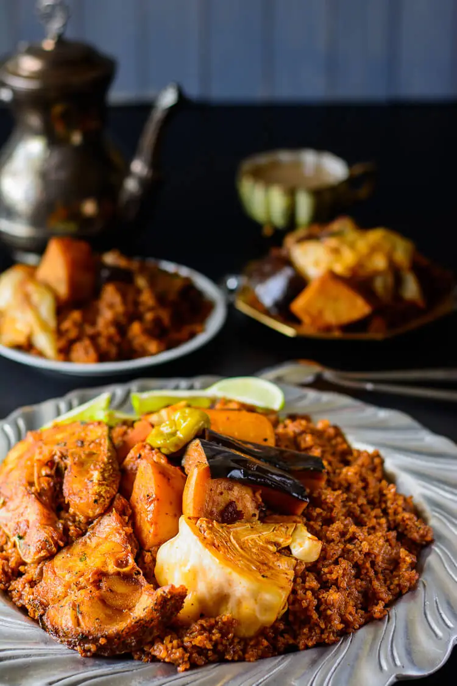

Thieboudienne: Senegalese Jollof Rice And Fish

Description
Thieboudienne literally transalte means the rice of fish in the Wolof language in Senegal.
The name hardly does the dish justice. Thieboudienne is considered to be the national dish of Senegal
and for good reason , it is bursting with layers of excellent flavor. Just one of the reasons Senegalese
cuisine is known around the world as delicious.
Ingredients
A handful of parsley about a heaping cup
1 scotch bonnet/habanero pepper
2.5 lbs blue snapper fish preferably cut into fish steaks or any white fish of your choice
Ingredients for the Jollof Rice
2 cups of broken jasmine rice or regular jasmine rice (should be soaked in water)
1 sweet poato
1 purple eggplant
4 carrots 1 used orange purple and yellow carrots
1/2 a head of cabbage
2 bell peppers
3 scotch bonnet/habanero peppers
1 cup vegetable oil
1 cup tomato paste
1 large onions sliced
3 cloves of garlic
2 scotch bonnet/ habanero peppers
3 tablespoons of shrimp bouillon
1 teaspoon of black pepper.
Salt to taste
Steps
With a mortar and pistol or in a food processor, grind the parsley, garlic, scotch bonnet
buillon black pepper, and salt into a rough paste.
Poke two holes into the flesh of the fish and stuff the with the parsley mic. Broil or Fry the fish until it is
golden brown on each side, an d set aside for the sauce,